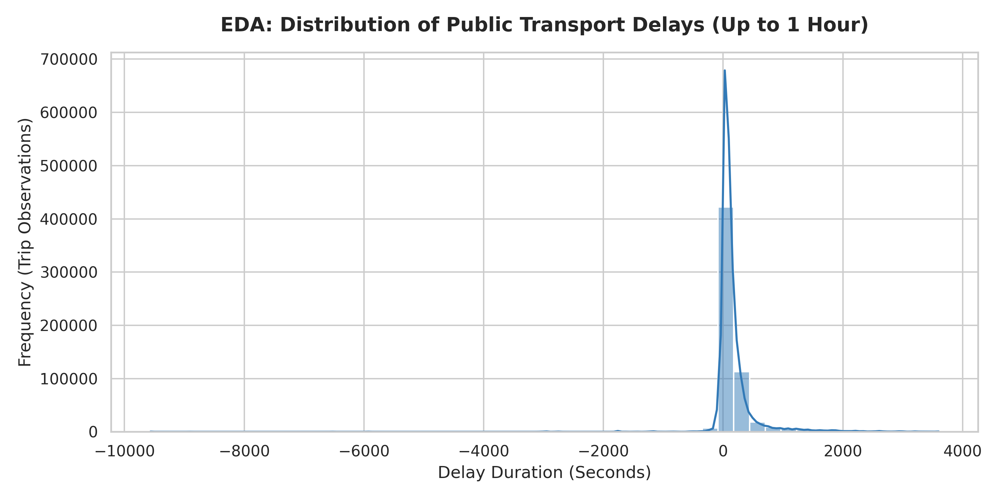
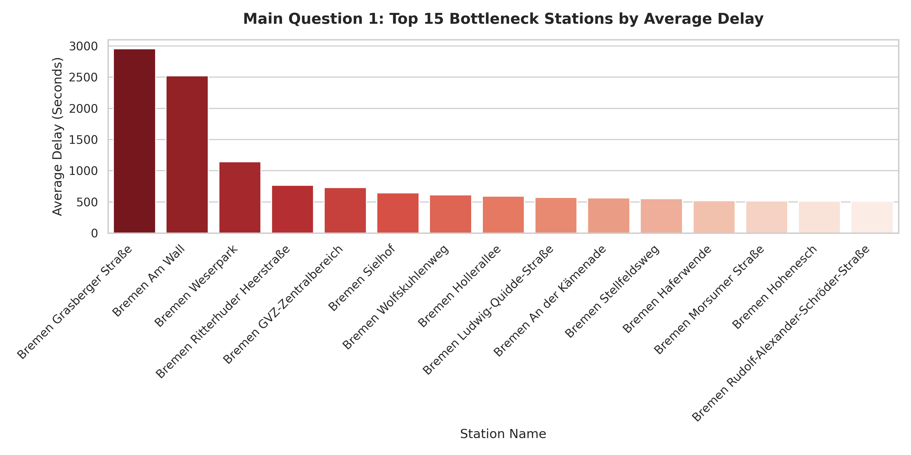
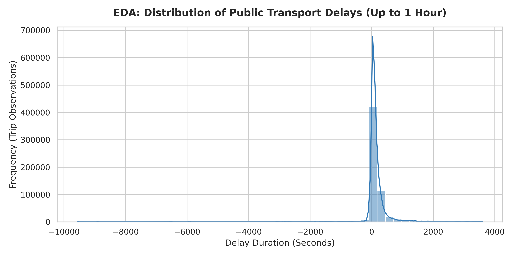

🚊 DataStory_BremenTransit: GTFS-RT Public Transport Telemetry Analytics


An advanced data analytics and digital transformation project analyzing BSAG and VBN public transport delay telemetry across the Bremen tram and bus network covering August 17–31, 2026.
👥 Project Team & Contributions
This collaborative project was developed by a three-member team, with responsibilities divided across data engineering, exploratory analysis, and core research questions:
| Team Member | Role & Responsibilities | Focus Area |
|---|---|---|
| Team Member 1 | Data Processing & Ingestion Pipeline | Built the high-performance Polars ingestion engine for 4,055 snapshot files, handled schema parsing (1E route anomalies), and performed Exploratory Data Analysis (EDA) distribution modeling. |
| Team Member 2 | Main Research Question 1 | Investigated spatial bottleneck hotspots, mapped numerical GTFS IDs using lookup_table.csv, and analyzed chronic station-level delays across the network. |
| Team Member 3 | Main Research Question 2 | Analyzed temporal delay trends, computing hourly aggregations (mean vs. median) to evaluate peak commute congestion and network schedule efficiency. |
🛠️ Data Architecture & Integration Methodology
- Dataset Source: Over 4,055 snapshot telemetry CSV files (
update_data (1).zip) containingtrip_id,stop_id,delay_seconds, andtimestamp_fetched. - Static Reference Enrichment: Combined dynamic telemetry with
lookup_table.csv(containing 2,365 records withstop_id,stop_name,stop_lat,stop_lon, androute_short_name). - Join Operation: Performed a left join on
stop_idto translate raw numerical database identifiers into human-readable Bremen station names and transit line numbers.
📊 Dashboard Visualizations & Analysis
1. Exploratory Data Analysis (EDA): Delay Distribution

* What this graph shows: A distribution histogram and KDE curve representing the frequency of delay durations (ranging from -10,000 to +2,000 seconds) across all snapshot observations. * Data insights: The vast majority of transit observations cluster tightly around the 0-second mark (punctual operations), with a sharp right-skew indicating that when delays occur, they tail off gradually up to 30+ minutes. Negative values capture early arrivals relative to schedule baselines.2. Main Question 1: Top 15 Bottleneck Stations (Spatial Hotspots)

* What this graph shows: A ranked bar chart illustrating the top 15 chronic bottleneck stations across the BSAG/VBN network, sorted by average delay duration in seconds. * Data insights: Stations like Bremen Am Wall and Bremen Grasberger Straße experience extreme average delays exceeding 3,000 seconds. By joining telemetry withlookup_table.csv, transit planners can instantly isolate specific physical junctions causing system-wide friction.
3. Main Question 2: Hourly Delay Patterns (Temporal Surge Analysis)

* What this graph shows: A dual-line time-series plot comparing mean delay (red line) versus median delay (blue dashed line) across all 24 hours of the day. * Data insights: Delays peak significantly during midday and afternoon rush hours (surging past 200 seconds on average around 14:00–16:00), whereas the median remains stable around 60–100 seconds. This reveals that while off-peak hours run smoothly, specific peak operational windows suffer from severe outlier congestion.🎯 Conclusion & Future Recommendations
- System Reliability: Bremen’s transit network maintains high baseline punctuality during early morning and late night hours, but suffers from localized bottleneck compounding at specific hubs (e.g., Am Wall).
- Operational Intervention: Municipal transit authorities (BSAG/VBN) can utilize these GTFS-RT telemetry insights to dynamically adjust schedule padding or signal priority at high-delay stations during peak afternoon hours.
- Portfolio Value: Demonstrates how combining Polars streaming pipelines with static GTFS lookups creates an efficient, scalable framework for urban transit analytics.